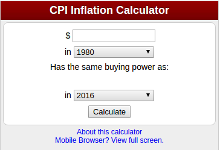
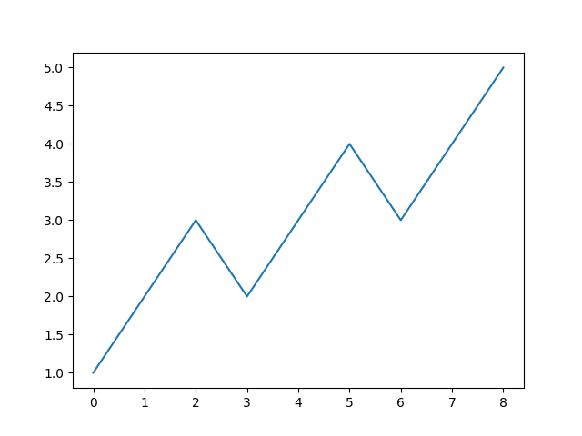
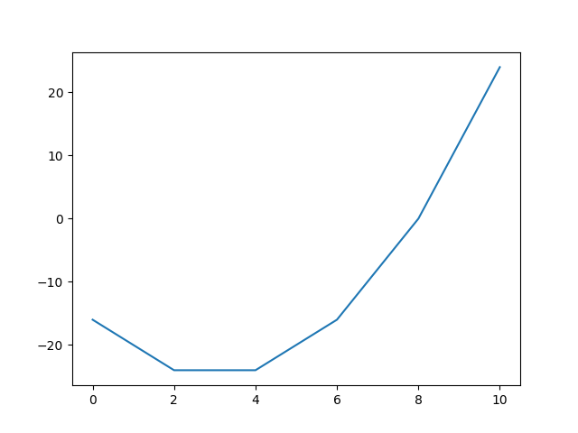
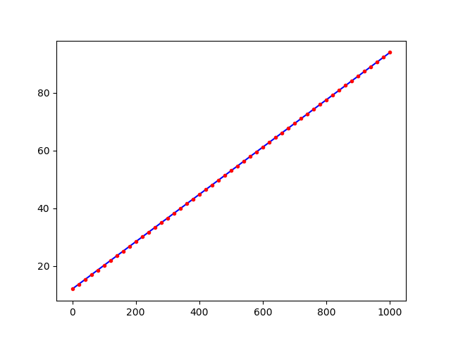
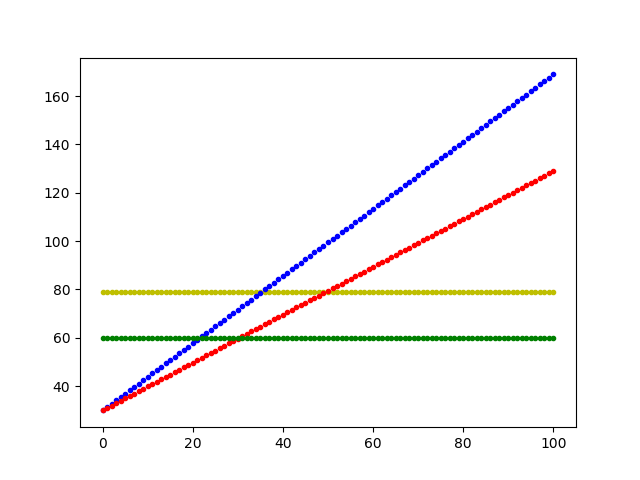
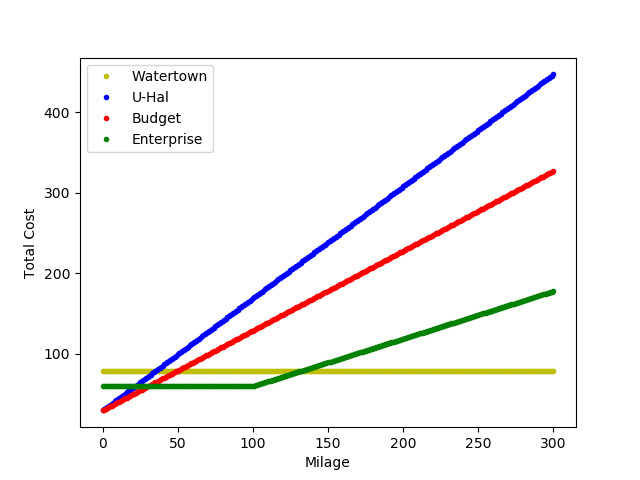

class: center, middle # Problem Solving - Part 2 .author[ CORE-UA 109.01, Joanna Klukowska <br> <!--adapted from slides for CSCI-UA.002 by D. Engle, C. Kapp and J. Versoza--> ] --- class: center, middle .section[ # inflation ] --- # __inflation__ .left-column2[ ** or what is your money going to be worth tomorrow?** <br><br><br> - Each year things cost more than a year before. - This is called __inflation__. - U.S. Bureau of Labor Statistics provides the inflation calculator [http://www.bls.gov/data/inflation_calculator.htm](http://www.bls.gov/data/inflation_calculator.htm) ] .right-column2[  ] .below-column2[ - Using the inflation calculator we can find out what $100 of some past year is worth these days. - For the inflation rate data see _Current US Inflation Rates: 2006-2017_ at [http://www.usinflationcalculator.com/inflation/current-inflation-rates/](http://www.usinflationcalculator.com/inflation/current-inflation-rates/) ] --- # inflation - If you bought an item that cost $100.00 ten years ago, how much would you need to spend today for an equivalent item? (or what amount of money has the same __buying power__ as the $100.00 from a decade ago) - Guess: - Can you guess what $100 from 2014 would be _equivalent to_ in 2017? - How about $100 from 1998 (this is roughly when you were born, isn't it)? - How about 1913 (the earliest year in the calculator)? --- # why do we care about inflation? - Say you are one of the college graduates of 2015 and you get a job paying $50,000 a year with the guaranteed annual increase of 2%. - Are you really making $51,000 the following year? - Nominally yes, but it is not worth the same as $51,000 in the year that you were hired. --- # correcting for inflation **(this is a simple approximation; for a more complete analysis we would need to use the consumer price index)** What is the inflation rate? - If the $100 in 2016 is equivalent to $101.63 in 2017 (according to the inflation calculator from June 2016 to June 2017), then how can we figure out the inflation rate from 2016 to 2017? $$\\frac{ \\$101.63 - \\$100.00}{\\$100.00} = \\frac{\\$1.63}{\\$100} = 0.0163$$ inflation rate: 1.63% Inflation is a negative rate, it decreases the value of money. - Your salary of $51,000 in 2017 is worth only $51, 000 × (1 − 0.0163)=$50,168.70 (if we think of 2016 as a baseline for the buying power of money). Not a 2% increase! --- # inflation summary If the annual increase in one's salary is - less than the inflation rate, the income effectively decreases - more than the inflation rate, the income effectively increases If an interest rate offered by a bank is - below the inflation rate, the bank account is effectively losing value - above the inflation rate, the bank account is effectively gaining value --- class: center, middle .section[ # electricity bills ] --- # electricity bills - You may or may not be paying electricity bills, but one day you will and it is interesting to know how they work. - If you use twice as much electricity in June as you did in February is your bill twice as big (assume that the price is still the same)? - If so, we could calculate the amount of the bill as follows (note that electricity consumption is calculated in kilo-watt-hours, kwh): .center[_cost in a given month = price per one kwh × number of kwh used_] $$b( k ) = price × k$$ - (Note that the above formula will need to be adjusted to really represent the function that models electricity bills.) --- # electricity bills - Lane Electric is a power supplier company. Their website has a nifty calculator that allows one to estimate the amount of the monthly bill (see <http://laneelectric.com/tools/bill-estimator/>. Let’s try to figure out if we can actually come up with a pattern. <table> <thead> <tr class="header"> <th align="center">kWh used</th> <th align="center">monthly price</th> </tr> </thead> <tbody> <tr class="odd"> <td align="center">25</td> <td align="center">$14.05</td> </tr> <tr class="even"> <td align="center">50</td> <td align="center">$16.10</td> </tr> <tr class="odd"> <td align="center">75</td> <td align="center">$18.15</td> </tr> <tr class="even"> <td align="center">100</td> <td align="center">$20.20</td> </tr> </tbody> </table> - Can you figure out how much a single kWh of electricity costs? Work with a partner (or two) to see if you can come up with a formula. -- - The answer does not seem to be straight forward, does it? But what if you knew that the same company will issue a bill for $12.00 per month even if you do not use any electricity? --- # electricity bills - Here is the table again with the added column: <table> <thead> <tr class="header"> <th align="center">kWh used</th> <th align="center">monthly price</th> <th align="center">monthly price - $12.00</th> </tr> </thead> <tbody> <tr class="odd"> <td align="center">25</td> <td align="center">$14.05</td> <td align="center">$2.05</td> </tr> <tr class="even"> <td align="center">50</td> <td align="center">$16.20</td> <td align="center">$4.10</td> </tr> <tr class="odd"> <td align="center">75</td> <td align="center">$18.15</td> <td align="center">$6.15</td> </tr> <tr class="even"> <td align="center">100</td> <td align="center">$20.20</td> <td align="center">$8.20</td> </tr> </tbody> </table> - Can you figure out the pattern now? - It seems that each 25 kWh of electricity costs exactly $2.05. - This means that 1 kW costs $2.05/25 or $0.082 or 8.2¢. - And the bill can be calculated as $$ b(k) = 0.082 × k + 12.00 $$ -- What other bills _behave_ this way? --- # try it yourself: car rental - You are about to move and you need to rent a track to transfer all your things from the old place to the new place. You did your research regarding available rental places. Here is the information you collected: <table> <thead> <tr class="header"> <th align="left"> </th> <th align="center">Watertown</th> <th align="center"> U-Haul </th> <th align="center"> Budget </th> <th align="center">Enterprise</th> </tr> </thead> <tbody> <tr class="odd"> <td align="left">fixed cost</td> <td align="center">$79.00</td> <td align="center">$29.95</td> <td align="center">$29.95</td> <td align="center">$59.95</td> </tr> <tr class="even"> <td align="left">$ per mile</td> <td align="center">0.00</td> <td align="center">$1.39</td> <td align="center">$0.99</td> <td align="center">$0.59 <span>(after the first 100 miles)</span></td> </tr> </tbody> </table> - Which company should you use? - for a very short move (just couple of blocks)? - for a very long move (the East Coast to Alaska)? - what about a medium size move, let’s say 35 miles - What is the function for price for each of those companies (this should be a function of miles driven). --- class: center, middle .section[ # a picture is worth ... ] --- # example 1 - a simple plot ```python # these lines import plotting tools that # we will need for this problem import numpy as np import matplotlib.pyplot as plt # think of plt as our drawing canvas # or a whiteboard # first draw the plot plt.plot([1,2,3,2,3,4,3,4,5]) # then show it to have a window pop-up with # the actual plot plt.show() ``` -- .right[  ] --- # example 2 - quadratic function ```python import numpy as np import matplotlib.pyplot as plt # let's try to plot a quadratic function y = (x-3)^2 - 25 # first let's get some points for the x axis np.linspace works similar to the range() # function, but 1) both end points are included, 2) the last parameter states # how many values we want, not the interval x = np.linspace(0, 10.0, 6) # now we calculate the corresponding y values y = (x-3)**2 - 25 #finally, plot the graph and show it plt.plot(x, y) plt.show() ``` -- .right[  ] --- # example 3 - electric bill ```python import numpy as np import matplotlib.pyplot as plt # let's try to plot the values of our electric bill from Lane # Electric b(k)=0.082 * k + 12.00 # we want the plot for number of kilo-watt-hours ranging from 0 to 1000, # in increments of 20 kilo-watt-hours (so we need 51 points between 0 and 1000) k = np.linspace(0, 1000.0, 51) # we calculate the corresponding bill amount b = 0.082 * k + 12 #finally, plot the graph and show it plt.plot(k, b, 'b') # plot a blue line plt.plot(k, b, 'r.') # mark each point with a red dot plt.show() ``` --- # example 3 - electric bill .center[  ] --- # example 4 - track rental <100 mi ```python import numpy as np import matplotlib.pyplot as plt # let's try to plot the cost of renting a track from each of the four # companies - the price is a function of the milage driven # we want the plot for number of miles ranging from 0 to 100 num_of_points = 101 miles = np.linspace(0, 100, num_of_points ) # we calculate the corresponding prices for each company watertown = 79.0 * np.ones(num_of_points) uhal = miles * 1.39 + 29.95 budget = miles * 0.99 + 29.95 enterprise100 = 59.95 * np.ones(num_of_points) #finally, plot the graph and show it plt.plot(miles, watertown, 'y.') plt.plot(miles, uhal, 'b.') plt.plot(miles, budget, 'r.') plt.plot(miles, enterprise100, 'g.') plt.show() # save plot to file plt.savefig('/home/asia/Data/NYU_Teaching/core109/code/plotting/CarRental_100.png') ``` --- # example 4 - track rental <100 mi .center[  ] --- # example 5 - track rental >100 mi There is too much code to see it on the slide: [example5.py](example5.py). .center[  ] --- # Programming challenge Revisit the salaries of graduates from 2016. - assume starting salary of $50,000 - assume annual percentage increase of 2% Plot the salaries at the end of each year in the range 1 - 10. Hint: you will need to figure out the function that calculates that salary based on the given year number (we did that on the board last week). Now consider inflation. - assume that the inflation for the next ten years will be 1.6% a year Plot both, the salaries as calculated above and the salaries reduced by inflation.